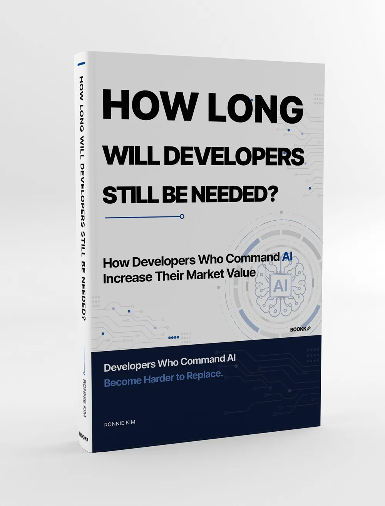

A Career Survival Guide for Developers in the AI Era
AI is not your biggest competitor.
The developer who knows how to use AI is.
Developers are not disappearing overnight. But the role of the developer, the way companies evaluate technical talent, and the market value attached to software work are already being rewritten.
This book does not begin with the vague fear that AI will replace developers. It begins with a more practical question.
Which developers will companies fight to keep?
The rules for developers have already changed
Many developers can feel the shift, even if no one has announced it out loud. AI tools can now draft documentation, generate test cases, assist with code review, summarize logs, and prepare incident reports in minutes. Work that once required hours of concentrated effort can now appear as a usable first draft almost instantly.
At first, this feels convenient. Then the harder question appears. If AI helps me save time, the company can see that too. So how will my work be judged from now on? If repetitive tasks shrink, will my role become more important, or will the company decide it needs fewer people like me?
“AI will not simply take your job. Someone who knows how to use AI may take the work you used to own.”
The question every developer now has to face“AI is not just changing how developers work. It is changing how developer value is priced.”
The central idea behind this bookDevelopers whose work consists mainly of repetitive coding tasks will face increasing pressure. Developers who can define the problem, verify AI-generated output, understand the business context, and improve team productivity will become more valuable. This book explains how that shift is already unfolding inside real organizations and how developers can respond before their options narrow.
The core questions this book helps you answer
01. Which parts of my work are becoming easier to reduce?
You will learn how to identify the daily tasks that AI can draft, shorten, automate, or make less dependent on you.
02. What can I still verify better than AI?
You will learn where AI-generated code, documents, tests, and reports can be trusted—and where human judgment must take over.
03. Does my experience exist only in my head?
You will learn how to turn years of experience into checklists, templates, decision standards, and workflows that your team can actually use.
04. How can I prove my value outside my current company?
You will learn how to describe your career not as “I worked hard,” but as “I reduced this, improved this, prevented this, and built this standard.”
This book is for developers who...
- Have tried AI tools and felt anxiety as much as convenience
- Are wondering whether simply writing more code is still enough
- Want to grow into technical leadership, architecture, system design, or team productivity design
- Feel useful inside their current company but worry whether the market would value them the same way
- Do not want to become a disposable executor inside AX task forces, AI adoption projects, or automation initiatives
- Want to remain valuable to organizations five years from now
- Have 0 to 7 years of experience and want to build proof of value beyond a portfolio
- Have more than 8 years of experience, or are developers in their 40s, and want to convert experience into market value again
What this book gives you
- A practical way to separate AI-reducible work from human-owned work You will learn how to divide your work into repetitive tasks, verification tasks, final-responsibility tasks, and standards that should remain inside the team.
- A path from repetitive coder to problem definer, verifier, and work designer This book shows how to move beyond simply producing more code and become someone who improves the structure of work itself.
- A strategy for staying valuable inside AX and AI transformation projects You will learn how to avoid being used only as an automation executor and instead gain influence over verification, design, and performance interpretation.
- A 90-day survival and growth plan by career stage The book explains what developers with 0–3 years, 4–7 years, 8+ years, and developers in their 40s should create as visible proof of value.
- Better language for job changes, promotions, and salary negotiations You will learn how to explain your career in terms of what you reduced, improved, prevented, standardized, and made repeatable.
Main structure of the book
Part 1. Companies Are Reassessing Developers
This part explains why the developer’s question has shifted from growth to survival, why companies are considering AI adoption before hiring, and why hardworking developers can become vulnerable when their work remains too repetitive.
Part 2. Developers May Share the Same Title, but Their Value Is Already Splitting
This part explains why two developers with the same years of experience can have very different market value, what human responsibilities AI cannot easily replace, and which developer roles are likely to become more valuable.
Part 3. If You Do Not Change Soon, Your Options May Shrink in Two Years
This part covers how not to be consumed inside an AX task force, how to tell whether a company is developing people or quietly reducing them, and what developers at different career stages should use to prove their value.
Part 4. Your Market Value Can Be Rebuilt Over the Next 90 Days
This part guides you through breaking down your work by AI replaceability, then building practical outputs and an execution plan for job changes, promotions, and long-term career value.
This book offers no empty reassurance. It offers a strategy.
This book does not tell you that developers will never disappear. It also does not claim that AI will replace every developer.
The reality is more demanding than either extreme. Developers are not simply disappearing. They are being redefined. Roles built mainly around repetitive implementation may shrink, while developers who define problems, verify AI-generated results, understand systems and customer context, and reduce repetition across teams may become more valuable than before.
Surviving longer is not enough. You need to know where your work is becoming cheaper—and where your value can become harder to replace.
Read a sample first
The sample section includes the core problem this book addresses, the prologue, and part of Chapter 01. You can first see how AI adoption is breaking down developer work and how company evaluation standards are changing quietly before most developers notice.
A realistic career survival guide for developers who want to stay valuable in the AI era
This book was written to help developers turn anxiety into a work diagnosis, an execution plan, verification standards, and stronger career language.
The developers who remain valuable will not be the ones who simply take on more tasks. They will be the ones who can separate work that will shrink from work humans must still own, then turn that judgment into outputs that teams, managers, and the market can understand.